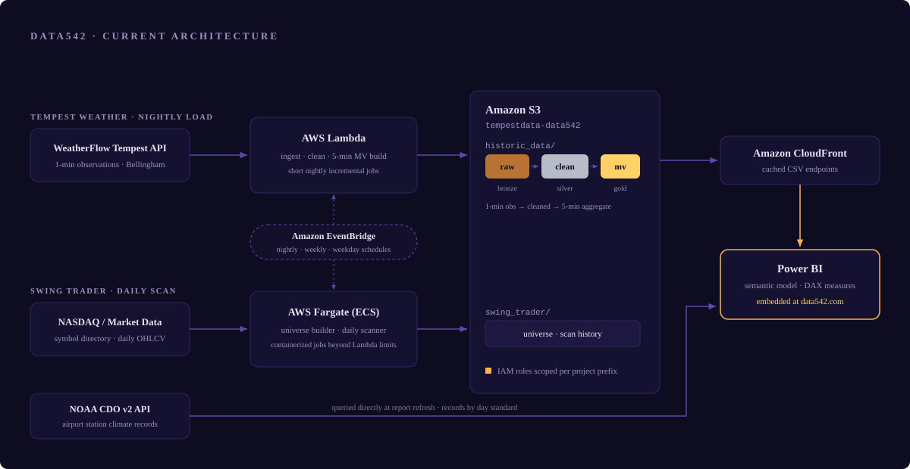
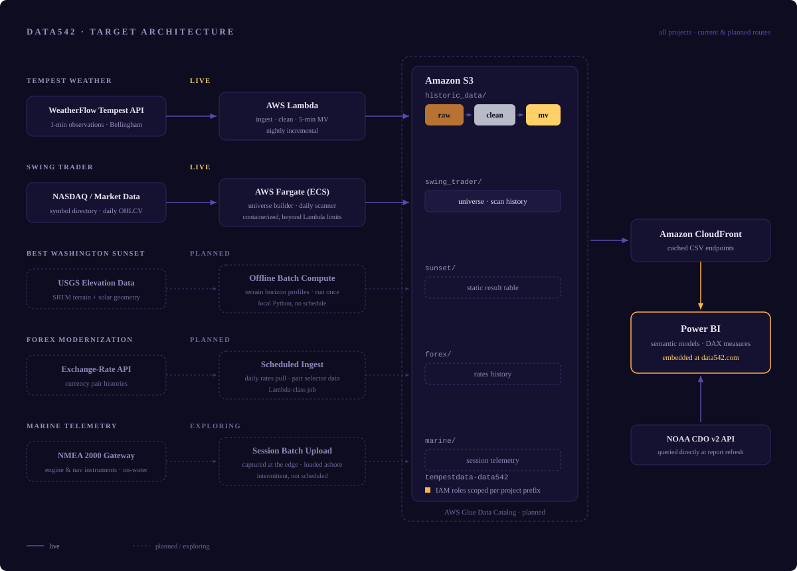

Every project on this site runs on a shared AWS foundation: scheduled compute jobs ingest data from external APIs, land it in Amazon S3, and refine it through staged layers, with Amazon CloudFront serving the curated output to Power BI reports embedded here. EventBridge handles all scheduling. Compute is matched to the workload. Short ingestion and transformation jobs run on Lambda, while longer-running scans run as Fargate container tasks. Projects share a single S3 bucket, separated by prefix and governed by IAM roles scoped to each project's own data. The platform currently supports two production pipelines, a weather station feed live since early 2025 and a daily equities scanner, with further projects planned on the same foundation.

The projects here share one data lake design: a medallion architecture, with layers named for what they do rather than for the metals. The Tempest weather pipeline implements it fully. Raw observations land from the WeatherFlow API exactly as received (bronze, in medallion terms), giving every downstream step a replayable source of record. A cleaning pass repairs structural defects without touching granularity, producing the silver layer at the station's native 1-minute resolution. A final aggregation builds a 5-minute materialized view, the gold layer, which is the only layer Power BI ever reads: roughly 272,000 pre-aggregated rows instead of millions, cheap to cache and fast to refresh.
The Swing Trader pipeline follows the same pattern with thinner layers, as its workload warrants: a daily scanner appends to a growing scan history that serves as both record and reporting source. The scan history is small and read directly, so separate cleaning and aggregation layers would add steps without changing the report.
One correction is handled outside the pattern. When a failed wind sensor produced a month of bad readings, the fix went into the reporting layer, nulling only the affected fields for the affected month, instead of rebuilding the silver layer. This kept the raw record intact and fixed the published data the same day. The fix is documented and can be moved into the lake later.
The weather pipeline's ingestion, cleaning, and aggregation jobs each run in seconds to minutes, so they run on Lambda: no infrastructure to manage, billed by the millisecond. The market scanner processes hundreds of symbols and can exceed Lambda's 15-minute execution ceiling, so it runs as a containerized Fargate task instead.
Each ingestion job reads a small control file recording where the last successful run ended, fetches forward from that point, and updates the control file only after everything lands. A failed run changes nothing; recovery is simply the next scheduled run, which picks up where the last good one stopped. No manual backfill is needed.
Power BI's built-in local-time conversion depends on the timezone of whatever machine evaluates the query: correct on a desktop in Bellingham, wrong when the service refreshes in a data center elsewhere. Timestamps are instead converted from UTC with explicit, rule-based offsets, so the report produces identical results wherever it runs.
A Glue Data Catalog and a common folder layout across all projects would let any project's data be found and queried the same way, for example with SQL through Athena. With only two pipelines running, the design would be guesswork and would likely need rework once the next project arrives. The work starts once the third pipeline, the Sunset project, is underway and its requirements are clear.
Live: Tempest Weather. The full medallion pipeline, live since early 2025, with the Power BI report embedded on this site.
Live: Swing Trader. A containerized daily scan of high-volatility NASDAQ equities using ATR, RSI, Supertrend, and volume rules, appending to a growing scan history. The universe of scanned symbols rebuilds weekly; scans run each weekday after market close, with the Power BI report embedded on this site.
Next: Best Washington Sunset. A one-time terrain analysis of west-facing viewpoints around Puget Sound, computing sunset azimuth against horizon profiles derived from USGS elevation data, to rank, for any date, which site offers the latest visible sunset and the longest civil twilight. Its heavy computation runs once, offline; the report reads a static result table, a deliberately different shape from the two scheduled pipelines.
Planned: FOREX modernization. An early exploratory notebook on Euro exchange rates, rebuilt on the platform with a currency-pair selector, multiple timescales, and a three-dimensional volatility visualization across twenty pairs.
Exploring: Marine Telemetry. An NMEA 2000 gateway will capture live data from an outboard engine and onboard instruments (fuel flow, heading, position) during time on the water. Unlike the platform's scheduled API pipelines, this data originates at the edge, collected in intermittent sessions and batch-uploaded to the lake afterward. Early analysis targets include fuel-efficiency curves by speed, and cross-referencing heading against position to estimate the effect of current.
Deferred: shared data catalog. The Glue Data Catalog and common folder layout described in the decisions above, starting once the Sunset project's requirements are clear.
